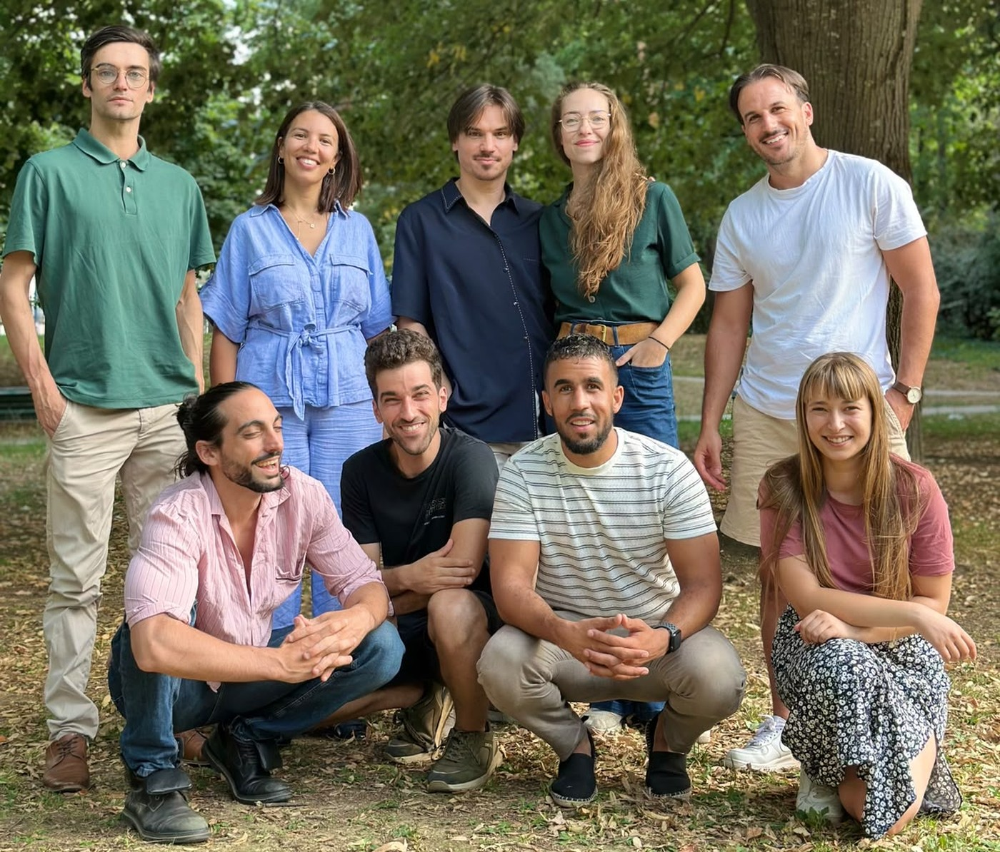
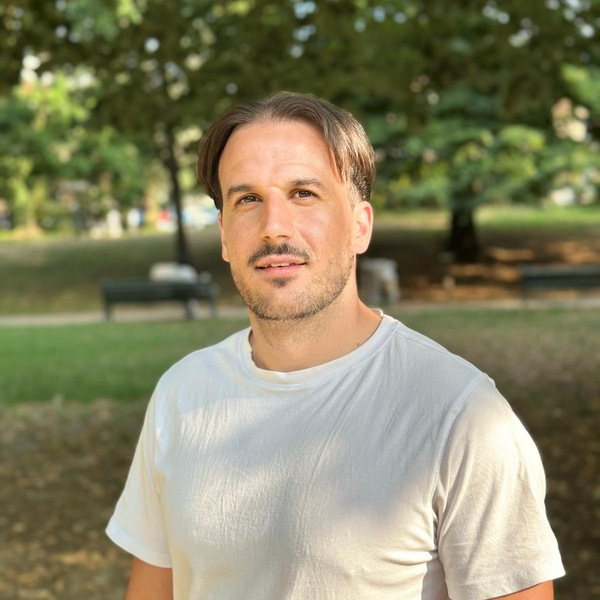
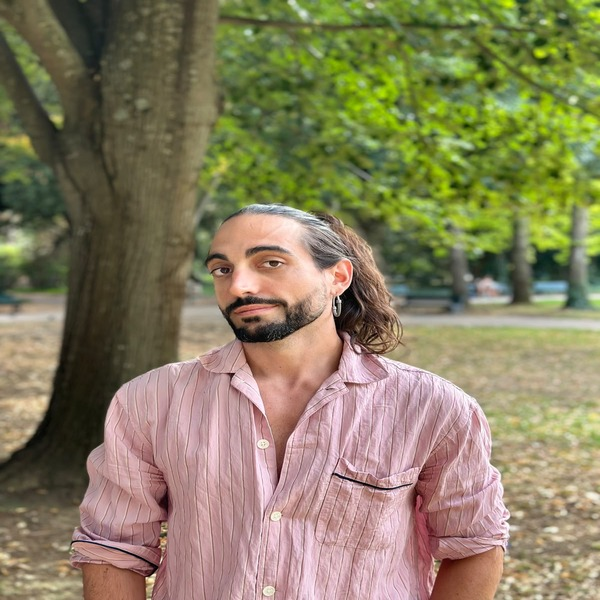

Vive Voix part d'un vécu, puis d'un constat plus large : la capacité à s'exprimer mérite d'être placée au centre de notre éducation, au même titre que la lecture ou le calcul.
Un enfant qui refuse d'aller à l'école un jour d'exposé. Un candidat parfaitement qualifié qui perd ses moyens face au recruteur. Une idée solide évoquée à mi-voix en réunion, puis reprise par un collègue plus à l'aise à l'oral. Un discours de mariage confié à quelqu'un d'autre à la dernière minute. Ces scènes n'ont rien d'exceptionnel, et c'est précisément ce qui doit interroger.
À chaque fois, c'est la même compétence qui manque : mettre des mots justes sur ce que l'on pense ou ressent, et les porter avec assurance devant les autres. Savoir s'exprimer à l'oral n'est pas un talent que l'on possède ou non à la naissance. C'est une compétence qui se travaille, qui se muscle, qui se transmet.
Ceux qui la maîtrisent l'ont souvent acquise par chance : une famille à l'aise avec les mots, une activité providentielle, un professeur qui a su donner sa place à l'oral. Les autres, la grande majorité, avancent sans ce bagage et le découvrent en creux, à chaque occasion manquée. C'est ce déséquilibre que Vive Voix vient corriger.
Permettre à chacun, enfant, adolescent ou adulte, d'apprendre à s'exprimer avec aisance et à affirmer ce qu'il porte en lui, par la pratique régulière de l'éloquence et du théâtre, dans un cadre professionnel, bienveillant et résolument tourné vers le plaisir.
Le théâtre n'est jamais proposé pour lui-même. Il est le terrain d'entraînement qui permet d'apprendre autre chose : la capacité à s'exprimer avec aisance devant les autres. Même lorsqu'une séance ressemble à un cours de théâtre classique, l'objectif reste le même : ramener chacun vers sa propre parole, plus assurée, plus incarnée, plus libre.
Notre pédagogie ne repose pas sur le charisme d'un seul intervenant. Elle s'appuie sur une méthode construite en niveaux progressifs, que chaque membre de l'équipe s'approprie. Cela garantit une cohérence pour les familles, qui savent ce que leur enfant va réellement apprendre d'une année sur l'autre.
Enfin, on ne vient pas à Vive Voix comme on suit une formation. On y vient comme on pratique un loisir exigeant, où la progression est réelle mais jamais l'objectif affiché de la séance. Un participant qui s'amuse en osant chaque semaine un peu plus progresse sans même s'en rendre compte.
Dans les années qui viennent, Vive Voix veut devenir une évidence pour les familles de Lardenne et des quartiers voisins : le nom qui vient naturellement à l'esprit lorsqu'un parent cherche à aider son enfant à gagner en confiance, ou lorsqu'un adulte ressent le besoin de mieux s'exprimer.
Cette ambition locale n'est pas un choix de modestie, mais un choix de méthode. Un projet associatif se construit d'abord en profondeur avant de se construire en surface. Lardenne est notre laboratoire et notre preuve : c'est là que la méthode doit démontrer sa valeur avant d'être envisagée ailleurs.
Vive Voix ne s'interdit pas de grandir, mais cette croissance ne sera jamais un pari : elle sera la conséquence logique d'un modèle qui a fait ses preuves. Cette discipline n'est pas un frein à l'ambition, elle en est la condition.

Toute l'équipe Vive Voix, réunie.
L'équipeUn intervenant référent accompagne le lancement, appuyé par une équipe de six intervenants issus d'une troupe de théâtre. Tous partagent le même objectif : faire de la prise de parole leur but premier, le théâtre restant leur outil. Les groupes sont volontairement maintenus à taille humaine, pour un accompagnement réellement personnalisé.
Secrétaire de direction de profession et mère de trois enfants, elle porte le projet associatif avec un sens aigu de l'organisation et de l'accompagnement humain.

Manager de profession, il voit dans l'association un moyen de créer du collectif et de la cohésion, en fédérant les membres autour d'un projet commun.
Chef d'entreprise, il porte la conviction que la prise de parole est un outil d'émancipation, et met son expérience entrepreneuriale au service de cette transmission.
Comédien et auteur toulousain, formé au Conservatoire de Théâtre de Toulouse puis au Laboratoire de Formation au Théâtre Physique. Il met son expérience de la scène et de l'écriture au service de la transmission.

Comédien formé entre la Biélorussie et le Théâtre-École d'Aquitaine à Agen, il co-fonde la compagnie Les Chats de Schrödinger avant de rejoindre Toulouse. Passionné de pédagogie, il transmet le travail du corps et de la voix à tous les âges.
Formé aux théâtres du Ring et du Hangar à Toulouse, il travaille avec plusieurs compagnies toulousaines, entre ateliers de prise de parole et cours de théâtre. Il se spécialise dans le travail de la voix, pour une parole qui sonne vrai.
Formée cinq ans au Conservatoire d'Art Dramatique de Toulouse puis au Théâtre du Hangar, elle est comédienne depuis plus de quatre ans. Elle anime des ateliers théâtre pour enfants dans le cadre du dispositif Passeport pour l'Art.
Formée dès l'enfance en Tunisie puis à l'option théâtre-danse du lycée Bellevue à Toulouse, elle se forme ensuite au Théâtre du Ring et à L'Acteur Conscient. Elle insiste sur l'accompagnement corporel de la parole.
Formé à Bordeaux-Montaigne puis au Théâtre du Hangar à Toulouse, il anime depuis plusieurs années des ateliers autour du conte et de la prise de parole. Passionné par les outils de l'Encyclopédie de la Parole, il travaille avec cinq compagnies.